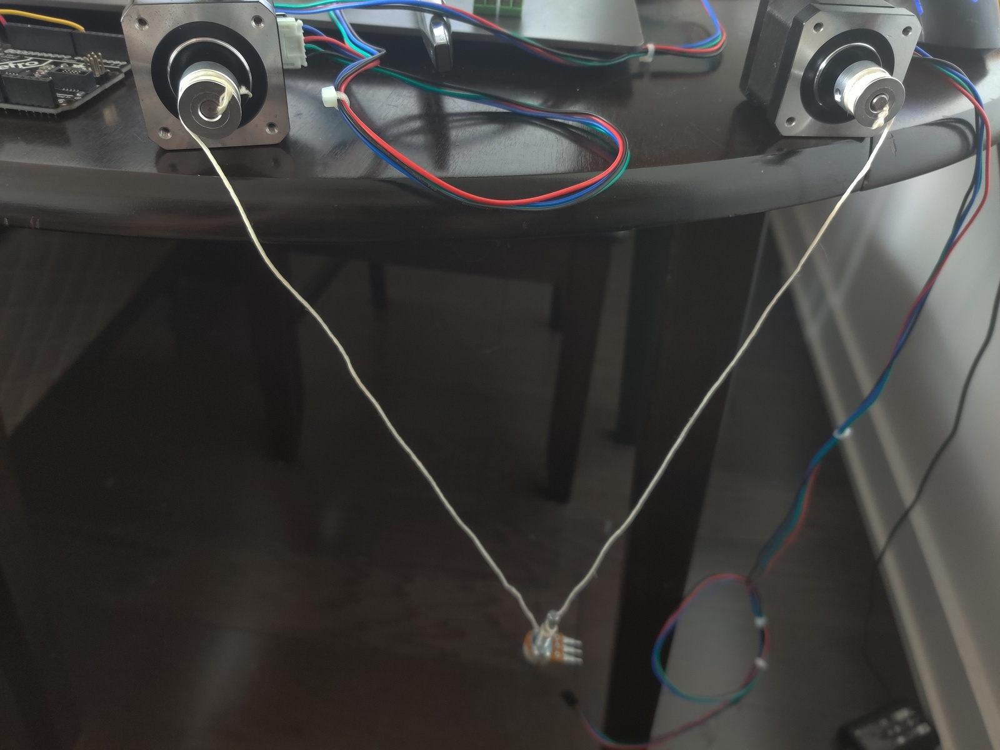
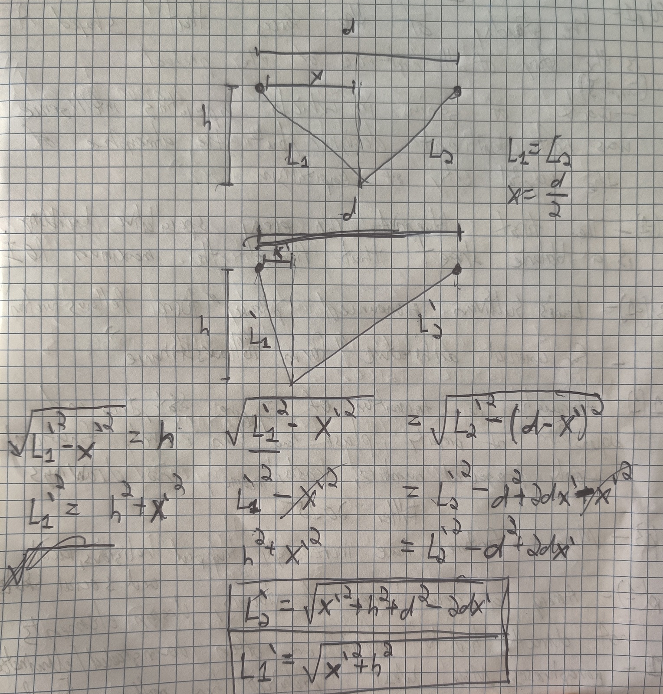
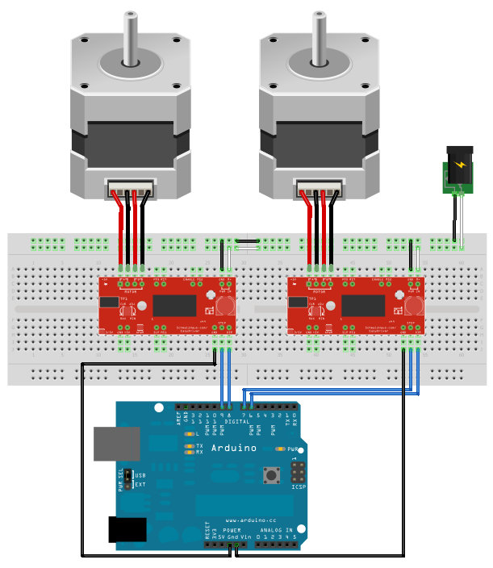
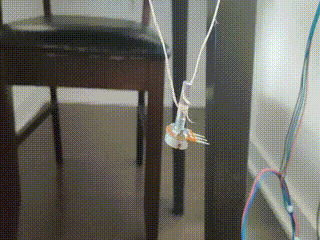

From last weeks class we learned how to work with stepper motors, and how to convert angular motion (rotation of the motor) to linear (movement of a timing belt, etc). For this week's work I decided to explore alterntive ways of achieving linear motion, and later explore possible calibration methods.
The linear motion I had in mind would involve two strings controlled by stepper motors, with the final position of an object or weight (in this case a potentiometer) being dictated by the position of each motor. The arrangement I set up is shown below, with strings secured under and on a timing belt pulley screwed onto the axle of the motor, and the ends of the strings tied to a heavy potentiometer.

Following this, we need to figure out the math behind how to achieve controlled linear motion with this system. In theory it is possible to get full 2-dimensional motion, but for simplicity we will begin with just getting one dimensional motion along the x-axis (horizontally). After doing some math, I was able to calculate the length of each line in order to keep the object at a constant latitude, and received expressions for each length as a function of d, the distance between the stepper motors, h, the height we want to keep it at, and x', the distance from the left-most stepper. The calculations and resulting formulas are shown below.

Now we need to set up our stepper motors. To do this, I used the included low-power stepper motor drivers and connected them to the Metro board for simplicity. The circuit for the stepper motors is shown below.

After validating that the stepper motors properly worked, I used the prior formulas to make the values the stepper motors go controlled by the formula, and tested it by having it vary the x value in the formula. Unfortunately when first testing the linear motion, the weight appeared to be moving in a more arc-like pattern. This is likely because the "d" and "l" values weren't properly calibrated for this specific setup. To fix this, I made sure the height we were testing at was the same as the distance between motors, and set the values equal to each other (that way we only need to calibrate one value). After this I ran the program with a number of different constants until linear motion was achieved, indicating we had found the right constant.
After this, I simply connected the motor controllers to the esp32 from last week and included the code from last week to activate the motion through a local webpage, and was able to activate the motion through my phone by connecting to the local network and going to the host ip. The resulting motion activated by my phone is shown in the gif below.

After successfully achieving linear motion, we reach the question of calibration. Calibration is much easier with other linear motion systems such as with a timing belt, since you can just go all the way to one extreme and set that as a calibration point. You can even have it go to one side until it hits a button. Here that is a bit more difficult. However, in theory what we could have both motors pull the string all the way up so it is maximally tight. Then, the motors can spin one way so the weight moves linearly in between the motors, until it hits a barrier. This will give us a reference point to work with.